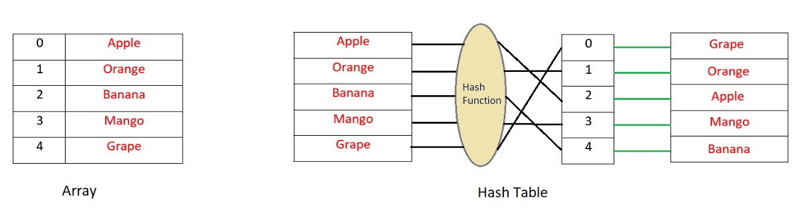
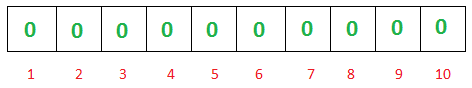
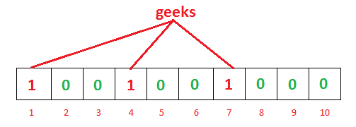
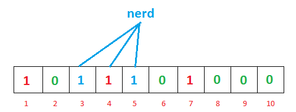
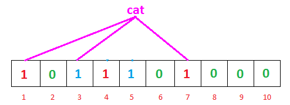
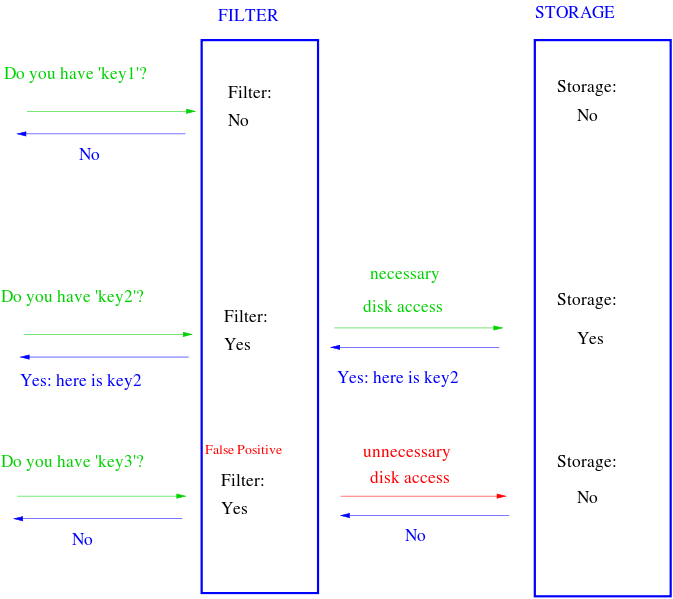

2019 07 01 🐚初识布隆过滤器
维基百科：布隆过滤器（英语：Bloom Filter）是1970年由布隆提出的。它实际上是一个很长的二进制向量和一系列随机映射函数。布隆过滤器可以用于检索一个元素是否在一个集合中。它的优点是空间效率和查询时间都远远超过一般的算法，缺点是有一定的误识别率和删除困难。
如果您有一个玻璃保护的书架，这将保护您的书籍免受灰尘和昆虫的侵害，但在您需要时，您将花费更多时间来阅读书籍。因为你首先需要滑动或打开玻璃然后才能拿到书。另一方面，如果它是一个开放的书架，这将使您更快地访问，但您将失去保护。同样，如果您按照其姓名的字典顺序组织图书，如果您知道图书的名称，则可以轻松搜索图书。但是，如果你的书架上有不同大小的盒子，你可以根据它们的大小来整理你的书籍，它看起来不错，但是你能赶紧找到一本书吗？我不这么认为。
数据结构和书架一样，您可以在其中组织数据。不同的数据结构将为您提供不同的设施和好处。要正确使用数据结构的功能和可访问性，您需要知道使用数据结构的权衡。
当主流数据结构如List，Map，Set，Tree等等主要用于实现关于数据是否存在的某些结果时，可能伴随着它们的出现次数等，概率数据结构（Probabilistic Data structures）将为您提供内存效率更快的结果是提供可能的结果而不是某个结果。现在使用这样的数据结构可能看起来不太直观，但我会在本文中试图说服这些类型的数据结构具有特定的用例，并且您可能会发现它们在某些情况下很有用。
在这篇文章中，我将讨论一种称为“布隆过滤器”的最流行的概率数据结构。
布隆过滤器
你知道哈希表是如何工作的吗？在简单数组或列表中插入新数据时，将插入此数据的索引不是从要插入的值确定的。这意味着'key(index)'和'value(data)'之间没有直接关系。因此，如果需要在数组中搜索值，则必须在所有索引中进行搜索。现在，在哈希表中，您可以通过散列值来确定键或索引。然后将此值放在列表中的该索引中。这意味着key是根据value确定的，每次你需要检查列表中是否存在该值时，只需对值进行散列并搜索该键即可。它非常快，并且需要以大O表示法进行O(1)搜索时间。

现在，让我们考虑一下你有一个庞大的弱密码列表，它存储在一些远程服务器上。由于尺寸的原因，无法在内存中一次加载它们。每次用户输入他/她的密码时，你想检查它是否是弱密码之一，如果是，你想给他/她一个警告，把它改成更强的密码。你能做什么？由于您已经拥有弱密码列表，您可以将它们存储在哈希表或类似的东西中，并且每次要匹配时，如果给定的密码有任何匹配，您可以检查它。匹配可能很快，但在磁盘上或通过远程服务器上的网络进行搜索的成本会使其变慢。不要忘记，您需要为每个用户提供的每个密码执行此操作。我们如何降低成本？
好吧，Bloom过滤器可以帮助我们。怎么样？在解释布隆过滤器的工作原理后，我将回答这个问题。
根据定义，Bloom过滤器可以检查值是“可能在集合中”还是“绝对不在集合中”。 可能和绝对不之间的细微差别在这里非常重要。这个“可能在集合中”正是它被称为概率的原因。使用智能词语意味着可能存在误报（false positive）（可能存在错误地认为该元素是阳性的情况）但是假阴性是不可能的。不要急躁，我们很快就会解释它究竟意味着什么。
布隆过滤器基本上由长度为m的位向量或位列表（仅包含0或1位值的列表）组成，最初所有值都设置为0，如下所示：

要将项添加到bloom过滤器，我们将其提供给k个不同的哈希函数，并在结果位置将这些位设置为1。如您所见，在哈希表中我们将使用单个哈希函数，因此只获得一个索引作为输出。但是在布隆过滤器的情况下，我们将使用多个哈希函数，这将为我们提供多个索引。

正如您在上面的示例中所看到的，对于给定的输入'geeks'，我们的3个散列函数将给出3个不同的输出 -1,4和7，我们已经标记了它们。

对于另一个输入'nerd'，哈希函数给出了3,4和5.您可能已经注意到索引'4'已经被先前的'geeks'输入标记。坚持你的想法，这一点很有趣，我们很快就会讨论它。
我们已经用两个输入填充了我们的位向量，现在我们可以检查它存在的值。我们怎么做？ 简单。就像我们在散列表中完成它一样。我们将使用我们的3个哈希函数对搜索输入进行哈希处理，并查看结果索引保持的内容。

因此，搜索'cat'，我们的哈希函数这次给我们1,3和7。我们可以看到所有索引都已标记为1.这意味着我们可以说，“也许'cat'已经插入我们的列表中”。但事实并非如此。出了什么问题？
实际上，没有出错。问题是，这是误报的情况。布隆过滤器告诉我们似乎之前可能插入了'cat'，因为索引应该已经被'cat'标记（尽管是其他不同的数据）。
那么，如果是这样的话，它有什么用呢？那么，让我们考虑一下'cat'是否会给我们输出1,6,7而不是1,3,7，那么会发生什么呢？我们可以看到，在3个索引中，6为'0'，这意味着它没有被任何先前的输入标记。这意味着很明显'猫'从未插入过，如果是的话，那么6就没有机会成为'0'，对吗？这就是如果数据不在列表中，布隆过滤器可以“肯定”地告诉它。
所以，简而言之：
- 如果我们搜索一个值并看到该值的任何散列索引为'0'，那么该值肯定不在列表中。
- 如果所有散列索引都为“1”，则“可能”搜索的值在列表中。
它开始有意义吗？有点可能吗？
很好，现在，回到我们之前谈到的'密码'示例。如果我们用这种类型的布隆过滤器实现我们的弱密码检查，你可以看到，最初，我们会用我们的密码列表标记我们的布隆过滤器，这将给我们一个位向量，其中一些索引标记为'1'而其他索引因为布隆过滤器的大小不会很大并且是固定大小，所以如果需要，它可以很容易地存储在存储器中，也可以存储在客户端。这就是为什么布隆过滤器非常节省空间的原因。在散列表需要基于输入数据的任意大小的情况下，布隆过滤器可以在固定大小下很好地工作。
因此，每次用户输入密码时，我们都会将其提供给我们的哈希函数，并根据我们的位向量进行检查。如果密码足够强，布隆过滤器将向我们显示密码肯定不在“弱密码列表”中，我们不必再进行任何查询。但是如果密码看起来很弱并且给我们一个“肯定的”（可能是误报）结果，我们会将它发送到我们的服务器并检查我们的实际列表以确认。
如您所见，大多数时候我们甚至不需要向我们的服务器发出请求或从磁盘读取以检查列表，这将显着提高应用程序的速度。如果我们不想在客户端存储位向量，我们仍然可以将其加载到服务器内存中，这至少可以节省一些磁盘查找时间。还要考虑一下，如果您的布隆过滤器误报率为1％（我们稍后会详细讨论错误率），这意味着在服务器或磁盘的昂贵往返中，只有1％的查询将是以虚假结果返回，其他99％不会徒劳无功。不错。

布隆过滤器操作
基本布隆过滤器支持两种操作：测试和添加。测试用于检查给定元素是否在集合中。添加只是向集合添加元素。
现在问题来了，根据我们到目前为止所讨论的内容，是否可以从布隆过滤器中删除项目？如果是，那怎么样？
休息2分钟，考虑一下解决方案。


现在我们要从中删除'geeks'。因此，如果我们从位向量中移除1,4,7，因为它们被'geeks'标记，并将它们转换为'0'，会发生什么？您可以很容易地看到，下次如果我们搜索'nerd'，因为索引'4'将显示'0'，它肯定会告诉我们'nerd'不在列表中，尽管它实际上是。这意味着在不引入假阴性的情况下无法移除。
那么，解决方案是什么？
解决方案是我们不能在这个简单的布隆过滤器中支持删除操作。但是如果我们真的需要具有移除功能，我们可以使用称为计数布隆过滤器的布隆过滤器的变体。这个想法很简单。我们将存储一个整数值，而不是存储单个位值，然后我们的位向量将是一个整数向量。这将增加尺寸并增加空间，为我们提供删除功能。我们不会在插入值时将位值标记为“1”，而是将整数值递增1.要检查元素是否存在，请检查散列元素后的相应索引是否大于0。
如果您很难理解“计数布隆过滤器”如何为我们提供“删除”功能，我建议您拿笔和纸张模拟我们的布隆过滤器作为计数过滤器，然后尝试删除它。希望你能轻松搞定。
布隆过滤器大小和散列函数的数量
您可能已经明白，如果布隆过滤器的大小太小，很快就会将所有位字段变为“1”，然后我们的布隆过滤器将为每个输入返回“误报”。因此，布隆过滤器的大小是一个非常重要的决定。较大的过滤器将具有较少的误报，并且较小的一个。因此，我们可以根据“误报误差率”调整我们的布隆过滤器以确定我们需要多少精确度。 另一个重要参数是“我们将使用多少哈希函数”。我们使用的哈希函数越多，布隆过滤器就越慢，填充越快。但是，如果我们的人数太少，我们可能会遭受太多误报。

从上图可以看出，增加散列函数k的数量将大大降低错误率p。
我们可以根据过滤器的大小m，散列函数的数量k和插入的元素数n来计算误差率p，公式如下：
作为Bloom过滤器的元素数量和大小的函数的误报概率。已假设k=(m/n)ln2：

另外一点我还需要在这里提一下。由于使用bloom过滤器的唯一目的是搜索速度更快，我们不能使用慢速散列函数，对吧？诸如Sha-1，MD5之类的加密散列函数对于布隆过滤器来说不是一个好选择，因为它们有点慢。因此，更快的散列函数实现的更好选择将是murmur，fnv系列散列，Jenkins散列和HashMix。
参考
- http://www.sigma.me/2011/09/13/hash-and-bloom-filter.html
- https://guava.dev/releases/22.0/api/docs/com/google/common/hash/BloomFilter.html